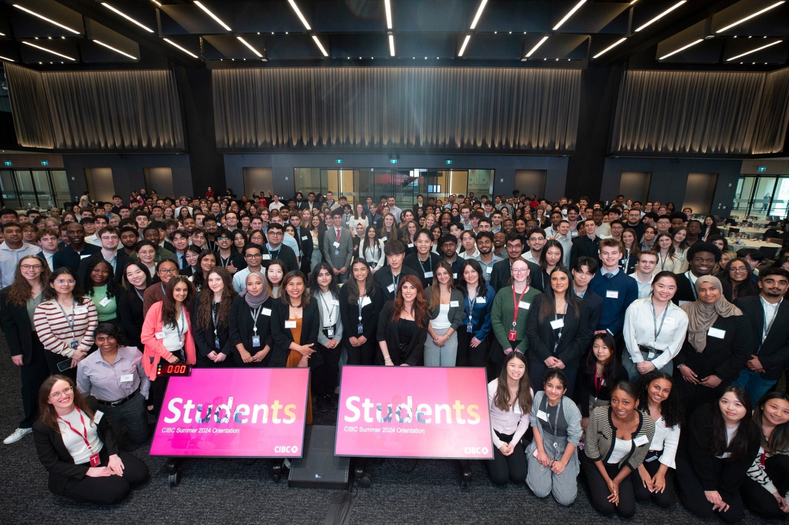

Working At CIBC
Summer 2024 Orientation Day
Introduction
Hi everyone! My name is Thanush, and I am currently pursuing a
Bachelor of Computing in Computer Science (co-op) at the University
of Guelph. I have completed two years of my studies and am now
finishing my first co-op work term. During this term, I worked at
CIBC (Canadian Imperial Bank of Commerce) as a Technical Systems
Analyst with the Market Data Support team at CIBC Capital Markets.
At CIBC, I gained valuable experience by working on a range of
impactful projects with the support of a dedicated team. Throughout
this report, I will share my experiences at the bank and how this
opportunity has positively influenced my career growth.
Information About The Employer
CIBC is widely known as one of the top five banks in Canada. It serves over 14 million personal banking, business, public sector, and institutional clients in Canada, the U.S., and around the world. The office where I worked is located at 161 Bay Street on the 4th floor of the TD Canada Trust Tower. Many of CIBC's offices, including the trade floor, occupy several floors in this building. The areas of computer science most relevant to my role at CIBC include IT troubleshooting and software development.
Interesting Facts
- There were over 500 summer interns this work term, the most amount of interns the company has ever had at once.
- CIBC operates out of three main locations in downtown Toronto: its headquarters at 81 Bay Street, known as CIBC Square; 161 Bay Street, also known as the TD Canada Trust Tower, which includes the trade floor; and 595 Bay Street, referred to as Atrium on Bay.
- The company was founded in 1867 and has since grown to become one of the biggest and best banks in the country.

The 8th floor patio at CIBC Square
Learning Goals
My 5 goals were...
- To be able to engage in hands-on projects and challenges with the team
- Enhance my problem-solving skills to efficiently and effectively address a wide range of user problems
- Gain a better understanding of the trading softwares used within my LOB (line of business)
- Make meaningful and valuable connections
- Learn more about market data
I set a few goals related to my job tasks, knowing they were areas I wanted to improve. For example, before starting this role, I had little to no knowledge of market data—it was a topic I wasn’t familiar with. However, working with the market data team gave me the chance to learn more about it. I was also eager to pick up any technical skills related to computer science. Since this was my first work term, I wasn’t focused on specific skills; I was open to learning anything that would help me grow. I wanted exposure to coding languages and technologies related to IT troubleshooting because they were relevant to my role and would help me excel further. Now, after four months, I can confidently say I’ve made progress on all my goals. Some were accomplished more than others, but I believe I made meaningful improvements across the board. My goals have not only allowed me to improve my skills as a student, but also as a person.
Job Description And Projects
My role during this co-op involved a variety of tasks. Early on, I
helped onboard summer students within Capital Markets by installing
trading software applications, such as Bloomberg, on their machines.
With over 150 students joining, it was a large project with a tight
deadline. I had to quickly pick up skills on the job, including
installing software as an administrator, navigating user computers,
and troubleshooting any issues that came up.
Aside from that, my work varied day to day. Our team managed a
helpdesk number for users on the trade floor, who would call if they
had issues with trading software. For example, if a user couldn’t pull
data from Bloomberg into Excel, I would troubleshoot by connecting to
their machine to resolve the issue. I also had the opportunity to work
on a coding project assigned by my manager, Matthew Cheung. The
project involved using the Bloomberg B-pipe API (blpapi) to request
and retrieve real-time data on various currencies. This was a Java
project, and I applied many of the skills I learned in school, such as
API requests, coding in Java, and testing and debugging my code.
The most interesting and unique part of my job is interacting with users on the trade floor every day. \ I really enjoy helping others solve problems, especially when they get stuck on technical issues. By fixing these problems quickly, I can make a big difference in their workflow. When I help them get back to work faster, it improves their productivity and makes their job easier. It feels rewarding to know that my support has a direct impact on their day-to-day tasks. Plus, solving these issues helps me build better technical skills and stronger relationships with the people I help.
I had the opportunity to participate in the 10th Annual CIBC Community Cup Soccer Tournament for United Way!
Conclusion
Overall, this co-op experience has been a pivotal stepping stone in my career development. It has given me a firsthand look at what it's like to work in the computer science field and explore the various opportunities it offers. I've also gained insight into the many career paths available within Computer Science. Through this experience, I’ve learned how to collaborate effectively with a team and perform under pressure. I’ve also acquired several technical skills, including network and systems administration, which I believe will be valuable in my future career. I have had the opportunity to make meaningful connections with fellow co-ops and full-time employees across the bank, positively impacting my experience. As I move forward with the next four months as a Technical Systems Analyst on the Market Data Support team, I’m excited to continue growing and learning in this role.

The main sign at CIBC Square
Acknowledgments
I want to sincerely thank the entire Market Data Support team— Johnny Leung, Matthew Cheung, Jonathan Carron, and William Hendrickson—for their support and guidance over the past four months. I really appreciate the time and effort they put into helping me learn and grow, whether it was through sharing their expertise or giving me the chance to take on meaningful projects. Their mentorship has been invaluable, and working with them has been an incredible experience. I'm grateful for the opportunity to have been part of such a supportive and talented team. I am excited to see what the next 4 months have in store.